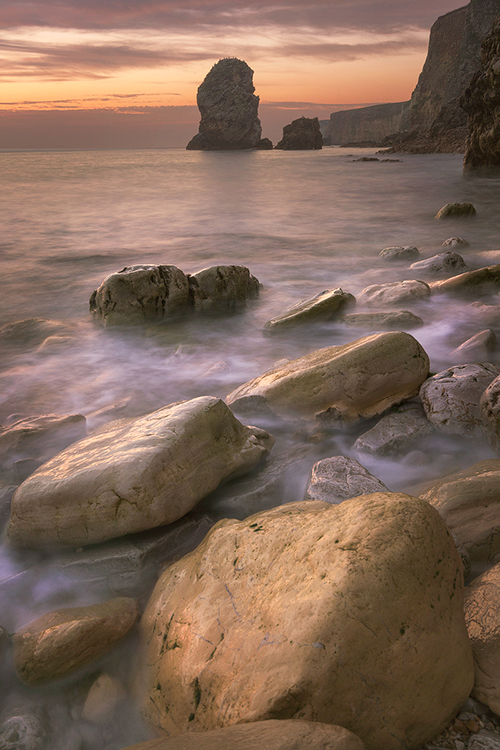
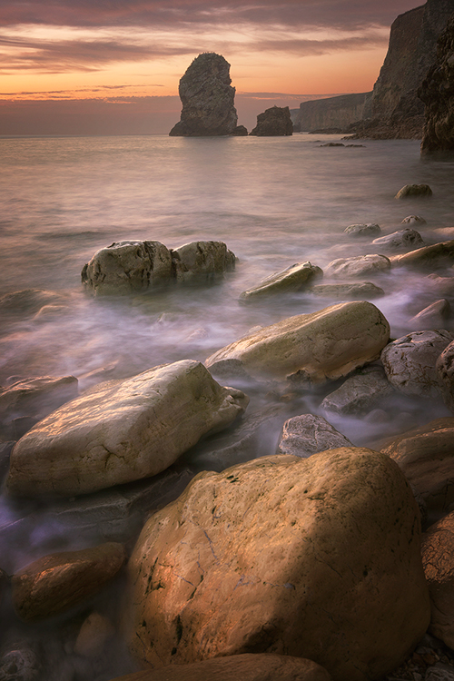
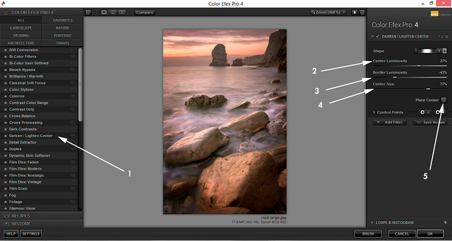

Jimmy Mcintyre is a travel photographer and educator. His photos have been published in local and national magazines, including the BBC. His online courses on digital blending and post-processing can be found in his official website. You can also check out his exclusive tutorials on 500px ISO here. In this tutorial, Jimmy shares his expert tips and videos on post-processing landscape photos. Read on and get inspired!
There is nothing quite like the power of a stunning seascape or landscape photo in transporting us momentarily to a world of wonder, magic, danger, beauty…the list is almost endless. Nature enchants us. As photographers, our imaginations often swirl with ideas when we witness one of its magnificent creations.
How much we choose to infuse our imaginations with nature’s true scene in our photography is a matter of personal enjoyment. In this article, I present to you 8 post-processing techniques for landscape photography, some of which will help to restore the natural scene as you saw it, some will enhance that scene further, and some will push your imagery beyond that of reality.
1. Remove lens flare from your landscape photography
Shooting directly into the sun is a tricky process when doing landscape photography, but it can often produce some beautiful results. One of the main challenges we face is lens flare from the sun. Sometimes, lens flare adds to a scene, and other times we’d prefer to be without it.
I created this tutorial to show you how to control lens flare in the field and in post-processing. And, as a bonus, I went through the full digital blending workflow, which will hopefully give you a few other handy tips.
2. Paint colors into a sunset with your landscape photos
We are literally going to paint extra color into the sunset and sunrise areas. This technique is most effective when there is already color in the sky, which you can enhance.
This is the example image we’ll be working with:
Puerto Natales, Chile
The two things we’re going to do here is paint more pink into the sky and water, and paint more orange into the area of the sun.
Here’s a “Before” and “After” comparison using the Painting with Warmth technique:
Below, you’ll see steps 1-6 for creating the first effect. And here is a screenshot, so you can visualize the steps.
Steps
(1) Create new layer. To create a new layer, simply go to the button left of the trash can in the layers panel and click on it.
(2) Select Paintbrush. With this chosen, change the opacity to 100%, a hardness of 0 so there’s a smooth transition, and create a medium sized brush.
(3) Click on foreground color. Your foreground color is at the bottom of the toolbar to the left. When you click on it a dialogue will appear. Place your cursor over the sunset area where there are golden/orange colors. You will see that the cursor has become an eyedropper tool. Left-click on the golden/orange color to select this as your foreground color.
(4) Paint across sunset. Take your brush and paint across the sunset, trying not to affect other areas. It’s okay if you go across the horizon on this type of image. But we should avoid the sticks to the left.
(5 & 6) Change blend mode to Overlay or Soft Light and change opacity. For the sunset area of this image, I changed the Blend Mode to Overlay, which creates a stronger contrast effect. But I lowered the opacity of this layer to 30%. You’ll instantly see stronger colors coming from the sunset.
Mask out any areas that you don’t want to affect. In this image, I accidentally went over the sticks, so I created a black foreground color and just masked that area of the adjustment out.
Now do the same to enhance the pinks (selecting a pink foreground color), this time painting around the sunset and in the sky and water. I used do the Soft Light Blend Mode and an opacity of 25% on this layer.
3. Add sky replacement to your landscape photos using a gradient mask
Whether we want to extend the dynamic range of light of our image, or replace the sky with a completely different sky, using a gradient mask can allow us to make a very natural transition between the layers we are blending.
In the image below, I blended two exposures; one for the sky and blown out parts of the water, and one for the foreground sticks and sand. This allowed me to create a balanced image with a greater range of light.
This post processing tutorial will show you how to use a gradient mask to quickly blend these two exposures.
4. Create a magical feel using the Orton Effect in your landscape photography
We’ve all seen magical landscapes that would look fitting in a Lord of The Rings movie. Often this dreamy feel is created using the Orton effect. The following images will show you the impact the Orton effect can have on your landscape photos. Below the images, you will learn how to create the Orton effect in Photoshop yourself.
Feel free to download my free Photoshop Action pack, which includes the Orton effect and luminosity masks: Photoshop Powerpack actions.
Hadrian’s Hall – Image straight out of camera
Image after luminosity mask exposure blending, contras adjustment, and lighting adjustments
Image with a heavy Orton effect applied

Image with a more subtle Orton Effect added
Steps for creating the Orton Effect
(1) Duplicate your Background Layer. Right-click on it and choose Duplicate Layer. This should be called Background Copy.
(2) Apply Image. Now go to Image>Apply Image. A dialogue box will appear. Make sure to change the Layer to Background. The Channel should already be on RGB, and where it says Normal, next to Blending, change that to Screen and press OK.
(3) Duplicate the Background Copy layer. Now we need to blur this new, top layer, which should be called Background Copy 2. Go to Filter>Blur>Gaussian Blur. The Radius you choose here is dependent on the size of the file you are working on. For this image, which is 5,184px wide, the Radius was set to 22.
(4). Change The Blend Mode. Select both of the Duplicate layers, go to Layers>Merge Layers, to collapse these into 1 layer. Now go to the Blend Mode of this layer and change it to Multiply. This will create the Orton Effect.
(5) Reduce the Opacity of this layer as you like it.
Tip 1: Try to be selective in how you apply the Orton Effect. It can soften important textures and fine detail which adds to the image. In this case, mask it out of the areas you don’t want it to be applied. For the image in this tutorial, the effect was not applied to the wall on the left, the sky, or the hills and trees in the distance.
Tip 2: Control your colors! After you apply this effect, you tend to find that your colors have become strongly saturated, like the greens in the image above. Be aware of whether or not that is enhancing or degrading your image.
5. Consider cutting through haze
In humid conditions, one of the biggest challenges in creating an impacting image is haze. It can soften details and leave our images with a blue cast. Aaron Nace of Phlearn.com has created a great tutorial that will show you how to remove that blue cast and create a nicely contrasting scene.
6. Use detail enhancer in your landscape photography to create greater impact
One wonderful way of giving your landscape photos greater impact is through detail enhancement. By applying local contrast changes within Photoshop, we can draw out beautiful textures and patterns that compliment the rest of the scene.
Petra, Jordan
Strong Detail Enhancement here to demonstrate the effect.
If you do choose to enhance the details in your image, I strongly advise that you do it selectively and subtly, unlike the Before/After comparison above. For example, in the image of Puerto Natales, Chile that we saw earlier, only the wooden sticks experienced detail enhancement.
Make sure to mask out any white edging that will often appear during strong detail enhancement. You can see a tutorial for detail enhancement here: Enhance Details in Photoshop
7. Remove strong color casts in your photos
Color casts are an inevitable part of photography. Sometimes, we misjudge the white balance, or use a filter which creates a strong cast over our scene. As with everything in Photoshop, there are multiple ways to remove color casts, but I find this one to be the most consistent.
Essentially, we are showing Photoshop what our white, 50% grey and black points are. Photoshop then adjusts the rest of the colors accordingly.
The image below is a composite—the sky was taken from a different image. But for the main long exposure shot I used a 10-stop ND which left a strong cast. The video below will show you how I removed the cast at the beginning of the workflow, and restored some of the natural coloring.
8. Change Light Balance – Nik Color Efex
One very common way for photographers to both increase mood and guide the viewer’s eye is through a vignette. One of the best tools for creating vignettes is Nik Color Efex’s Darken/Lighten Center filter.
Not only can you create a seamless, darker border, you can also shift the entire balance of light in your image onto an area of more prominence. With this filter, you can choose an area which you deem the center. From there you can brighten that area while smoothly and naturally darkening the rest of the image.
For example, this technique was used on 3 images in this article: Puerto Natales, Petra, and Hadrian’s wall. Notice how all three of these images have a vignette that smoothly fits in with the rest of the scene.
I’ve created a very subtle vignette in the images below (left=without vignette, right=with vignette). I’ve darkened the borders without under-exposing them, while slightly illuminating the rocks and water in the foreground.
Darken/Lighten Center Explained

(1) Being in alphabetical order, you will find Darken/Lighten Center just after Dark Contrasts.
(2) Center Luminosity doesn’t change the brightness of the actual center of the image. This alters the luminosity of the area you deem to be the center.
(3) Border Luminosity determines the darkness/brightness of the area around the center. The effect is feathered so the transition from bright to dark is very smooth and natural.
(4) Center size will affect how large center of your image will be. The larger the center size, the smaller the vignette.
(5) Finally, click on Place Center once. Then click where in your image you wish to be the focus of light.
Conclusion
I hope the post processing techniques in this article have been useful to you. As always, if you have any questions, please feel free to write them in the comment box and I will be happy to respond.
You can also follow my work at the following links:
My website
My Facebook page
My photography newsletter
You Might Also Like These Articles:
- The Importance of Post Processing, Part 3
- Back to Basics: A Long Exposure Photo and Processing Tutorial for Beginners
- Meet Photolemur: Artificial intelligence that automates your post-processing
- 23 Landscape Photography Tips From A Pro

{kind=link}
{kind=link}
{kind=link}
{kind=link}
{kind=link}
{kind=link}
{kind=link}
{kind=link}
{kind=link}
{kind=link}
{kind=link}
{kind=link}
{kind=link}
{kind=link}
Leave a reply